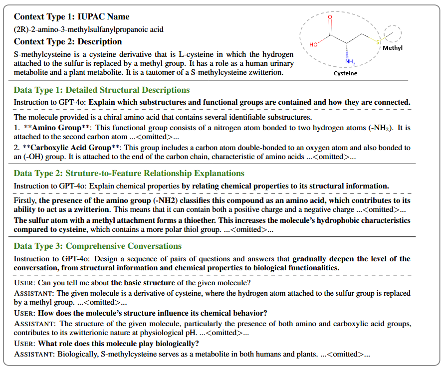
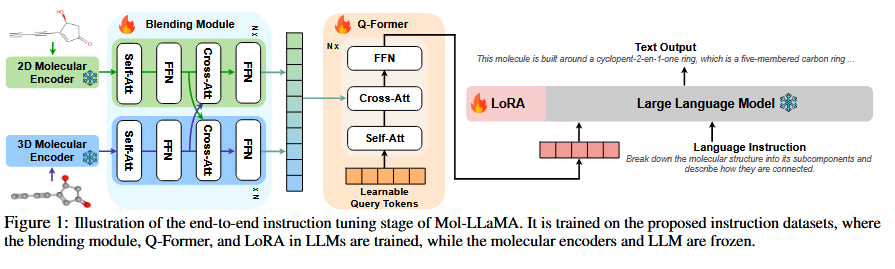
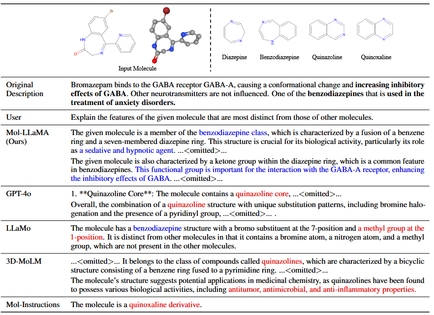
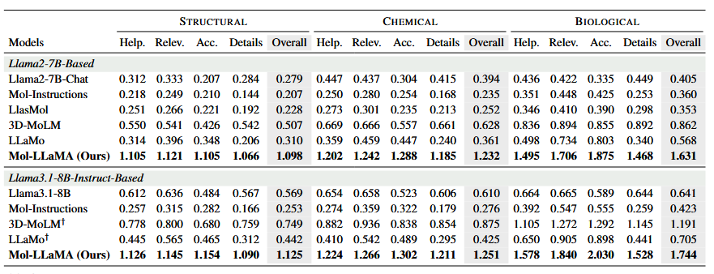
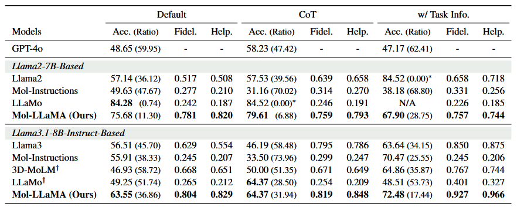

在药物发现和分子设计的前沿，理解分子的结构与特性一直是科学家们面临的重大挑战。随着人工智能技术的发展，大型语言模型展现出在科学领域提供辅助的潜力。然而，现有的模型在理解分子的复杂性和多维特性方面仍存在局限。近期发表的研究论文提出了一种创新的解决方案，旨在构建能够全面理解分子特性的通用分子语言模型。本文将探讨这项开创性研究的科研思路、方法论以及其潜在影响。
摘要:
理解分子是理解生物体和推动药物发现进步的关键，需要跨化学和生物学的跨学科知识。尽管大分子语言模型在解释分子结构方面取得了显著成功，但它们的指令集仅限于面向任务的数据集中的特定知识，并没有完全涵盖分子的基本特征，阻碍了它们作为通用分子助手的能力。为了解决这个问题，我们提出了Mol LLaMA，这是一种大分子语言模型，通过多模态指令调优掌握以分子为中心的一般知识。为此，我们设计了包含分子基本特征的关键数据类型，结合了分子结构的基本知识。此外，为了提高对分子特征的理解，我们引入了一个模块，该模块整合了来自不同分子编码器的互补信息，利用了不同分子表示的独特优势。我们的实验结果表明，MolLLaMA能够理解分子的一般特征，并对用户的查询产生相关的响应，并给出详细的解释，这意味着它有可能成为分子分析的通用助手。我们的项目页面位于https://mol-llama.github.io/.
研究背景与动机
理解分子是理解化学化合物和生物体的基础，也是推动科学发现的关键。传统的大型语言模型虽然在解释化学和生物学核心概念方面展示出潜力，但它们面临两个主要挑战：
- 表示局限性：传统LLMs只能处理SMILES等字符串表示，难以理解完整的分子结构。
- 知识范围狭窄：现有的分子语言模型通常在特定任务数据集上训练，缺乏对分子基本特性的全面覆盖，无法作为通用的分子助手。【分子LLM在零样本环境中难以准确地推断分子性质并提供详细的原理，阻碍了它们作为多用途、通用分子助手的能力。】
研究者们意识到，构建一个真正有用的分子语言模型需要它不仅能理解分子的结构信息，还需要掌握这些结构如何决定化学和生物学特性的因果关系。这一洞察促使他们提出Mol-LLaMA，一个旨在全面理解分子特性的大型分子语言模型。【学习以分子为中心的基础知识，将其定位为通用分子助手】
科研思路的演进
研究团队的思路演进可以概括为三个关键步骤：
- 确立分子特性的层次关系
研究团队首先洞察到分子特性存在层次化关系：分子结构决定化学特性，而结构和化学特性共同决定生物学特性。这一自然规律启发他们构建能够反映这种层次关系的数据集和模型。
- 多维表示的整合
团队注意到不同的分子表示方式各有优势：2D表示能明确建模键信息和连接性，而3D表示能捕获原子的空间排列。单一表示往往无法全面捕捉分子特性，因此他们设计了混合模块，整合不同表示的互补信息。
- 从基础到高级的学习路径
研究者设计了渐进式的学习路径，从基础的结构理解，到结构与特性的关系，最后到复杂多样的对话交互。这种路径使模型能够建立从简单到复杂的分子知识体系。
方法论与技术实现
指令数据集设计

构造指令数据的一个示例。我们使用PubChem中的IUPAC名称和描述作为提示GPT-4o的上下文，如第一块所示。以下三个块显示了GPT-4o对每种数据类型的指令和相应响应。
Mol-LLaMA-Instruct数据集是该研究的核心创新之一，包含三种精心设计的数据类型：
- 详细结构描述 (77k样本)：聚焦于功能团和连接性的详细描述，使用IUPAC命名提供准确的结构信息，为理解高级特性奠定基础。
- 结构到特征关系解释 (147k样本)：将结构信息与化学或生物学特性关联，建立因果关系，增强模型的推理能力。
- 综合对话 (60k样本)：设计由浅入深的对话，从结构特征逐步深入到化学和生物学特征，培养模型处理多样化查询的能力。
数据集不仅关注分子的基础知识，还关注推理能力，因为它旨在通过将分子特征与结构相关联来明确地提供因果关系。
数据集生成利用GPT-4o的化学和生物学知识，结合来自PubChem的注释描述和IUPAC命名，确保高质量的训练数据。

Mol LLaMA端到端指令调优阶段的图示。它在拟议的指令数据集上进行训练，其中LLM中的混合模块、Q-Former和LoRA被训练，而分子编码器和LLM被冻结。
创新模型架构
Mol-LLaMA的架构由四个关键组件组成：
- 双模态分子编码器：同时使用2D编码器(MoleculeSTM)和3D编码器(UniMol)，分别捕获不同的分子特性。
- 对于2D编码器，我们选择MoleculeTM，它通过2D分子结构和文本描述之间的对比学习从生物医学文本中学习分子语义。
- 对于3D编码器，我们选择UniMol（Zhou等人，2023），它通过掩码原子类型预测和位置恢复进行训练。
- 2D-3D混合模块：通过交叉注意力机制融合不同表示的互补信息，增强对分子结构的全面理解。【助于缓解幻觉问题，提高捕获结构信息的能力，从而增强对分子特征的理解。】
- 投影器(Q-Former)：将统一的分子表示映射到语言模型，初始化使用SciBERT，保证图结构的置换不变性。
- 大型语言模型：基于Llama-2和Llama-3.1系列，通过指令调优适应分子理解任务。
两阶段训练策略
研究采用两阶段训练策略以提高模型性能：
- 分子表示学习：训练混合模块和Q-Former，采用分子-文本对比学习、分子-文本匹配和基于分子的文本生成等多目标训练方法。
- 端到端指令调优：联合训练混合模块、Q-Former和LLM，使用LoRA方法提高训练效率。

案例研究，比较分子理解和推理能力。Mol LLaMA准确理解分子特征，回答正确的分子分类学，并提供与给定分子相关的独特性质。
实验验证与创新成果

如👆表所示，MolLLaMA在所有标准中的相对得分均超过1，表明它在理解分子的一般特征方面优于GPT-4o。相比之下，其他基线的得分大多低于1，表明对一般特征的理解较差。另一方面，与基本LLM相比，Mol LLaMA的性能有了显著提高，并且在同一架构上优于所有基线，这表明它理解了一般特征，并提供了有用和相关的解释，这要归功于所提出的指令数据集和混合模块。

在PAMPA任务上的零样本性能。我们报告了预测标签的比率以及保真度和有用性的相对得分（即LLM得分除以GPT-4o得分）的准确性。我们以粗体突出显示最佳结果，但所有预测标签都相同的情况除外，这些标签表示为∗。N/A表示超过20%的回复不符合答案格式的情况。†经过Llama3.1-8B-Instruct培训的分子LLM严格遵循其官方实施。
Mol-LLaMA的实验结果令人印象深刻：
- 超越GPT-4o的分子理解能力：在有用性、相关性、准确性和详细程度等所有评估标准上，Mol-LLaMA的表现优于GPT-4o，展示出卓越的分子通用理解能力。
- 强大的分子特性预测：在PAMPA等任务上实现了高准确率，同时保持高保真度和实用性，证明其作为分子分析助手的实用价值。
- 混合表示的优势验证：消融研究证明了混合模块的重要性，单独使用2D或3D表示无法全面理解分子，而提出的混合模块显著优于简单连接的表示方法。
- 数据类型的平衡影响：不同数据类型对模型性能产生互补影响，完整数据集的训练实现了理解通用特征和处理用户查询能力之间的平衡。
科学意义与未来展望
Mol-LLaMA研究在分子理解与表征领域的进展反映了科学方法论的一个核心哲理：复杂系统的理解往往需要多维视角的融合。单一表征难以捕捉分子的全貌，正如单一理论难以解释自然的全部奥秘。Mol-LLaMA通过同时关注微观结构和宏观性质，试图跨越这两种认识论的鸿沟，体现了科学研究中"部分与整体"的辩证思考。
未来研究面临的挑战在于模型认知的边界探索。任何模型都难以穷尽复杂系统的全部特性，科学进步往往源于对认知边界的不断推进与重构。研究者需要保持谨慎的认识论立场，既认可模型的潜力，也承认其固有局限。